1
Case study
Team Cymru Brand System
The Team Cymru identity had strong roots, but the system around it no longer fit the company. The dragon still mattered; the "Commercial Services" qualifier, detailed heraldic artwork, and limited color rules made the brand harder to use at a modern scale. I rebuilt the system with a simplified mark, production-ready guidelines, and product identities that could sit together without feeling identical.
tl;dr
- The old logo had equity, but it was too detailed and too tied to an earlier company structure.
- The dragon stayed because it carried the Welsh signal and existing recognition.
- The mark was simplified so it could work at small sizes, on dark backgrounds, and across print and digital contexts.
- The color and usage rules were documented for real production work, not just presentation polish.
- Malware Hawk, Foreshadow, and BARS became distinct product marks that still belonged to the same brand family.
Company Rebrand
Understand What Still Had Equity
The legacy logo combined a detailed red dragon with the name "Team Cymru Commercial Services." It felt formal and institutional, which had likely helped at an earlier stage of the company.
By this point, the brand needed more range. The qualifier no longer described the organization cleanly, the illustration lost clarity at small sizes, and the system did not adapt well to dark backgrounds, product contexts, or varied sales materials.
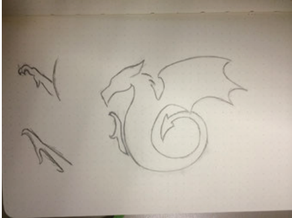
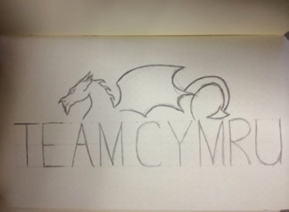
Keep the Dragon, Simplify the System
The dragon was the part worth protecting. It connected directly to Wales, to the company's name, and to recognition the brand had already built.
The sketch work focused on reduction: how simple could the form become before it stopped reading as a dragon? The final mark kept the gesture and attitude while removing detail that made the old logo difficult to reproduce.
Build Color Rules for Real Use
The palette kept the Welsh red as its anchor, then expanded into greens, neutrals, a near-black, and a supporting purple. The goal was a palette that could move between print, digital, brand, and product contexts without constant one-off decisions.
Each color was specified across Pantone, CMYK, RGB, and hex values so implementation did not depend on interpretation. The system needed to be predictable for designers, developers, printers, and outside partners.

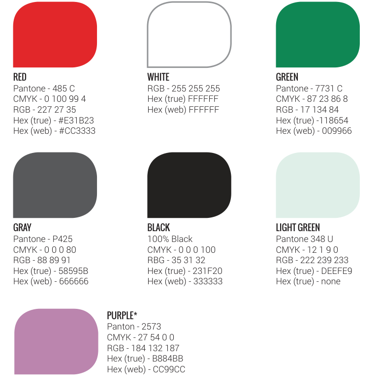
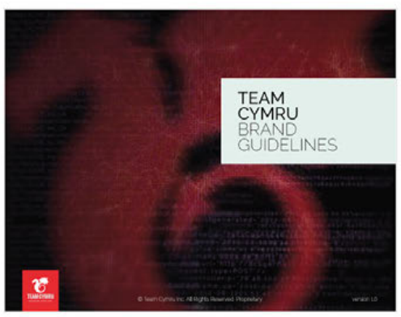
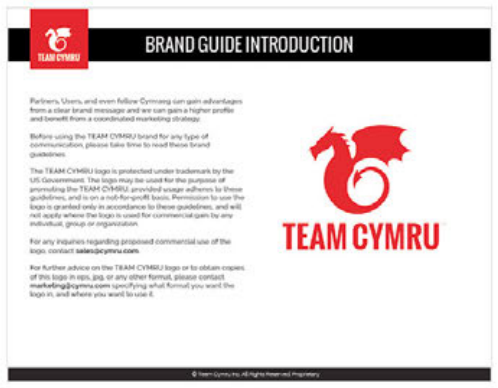
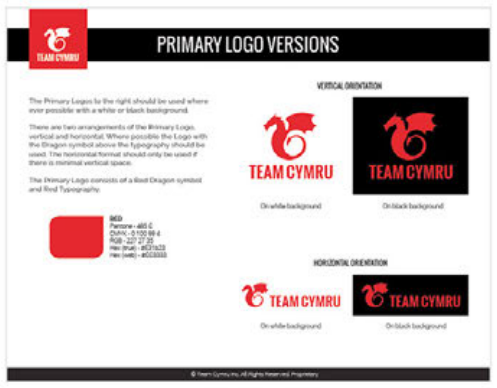
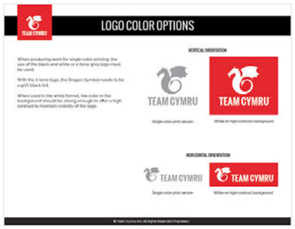
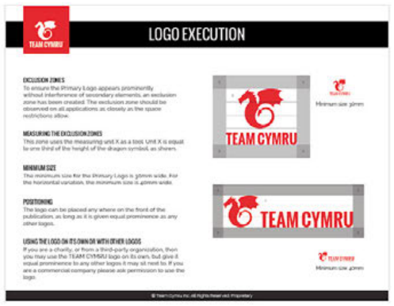
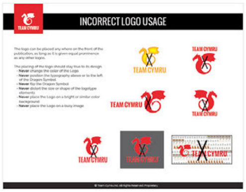
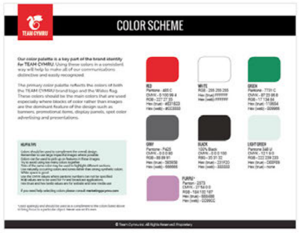
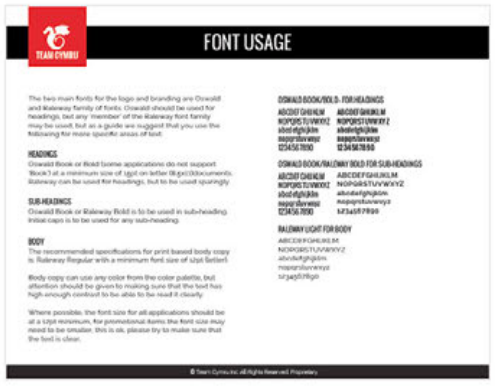
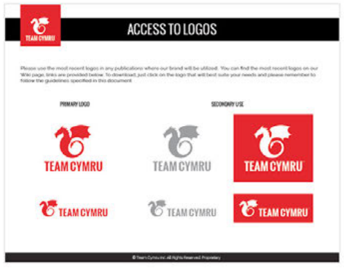
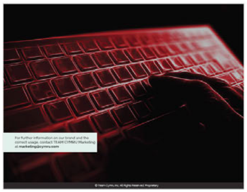
Make the Guidelines Useful
The guidelines focused on the decisions people make when using a brand day to day: which logo version to choose, how much clear space to preserve, which backgrounds work, what not to do, and which file format belongs in which context.
That made the document practical. A designer, developer, printer, or agency could use the system without asking for a separate explanation each time.
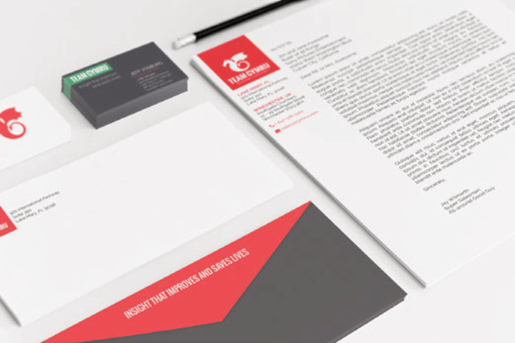
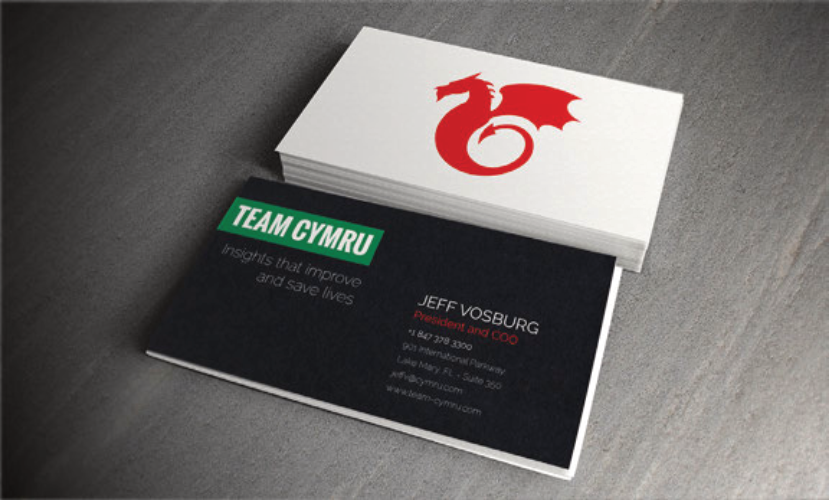
Outcome
The new system gave Team Cymru a brand that could travel: across web, product UI, sales materials, stationery, partner use, and production vendors.
The product marks extended that flexibility. Each had a clear concept, but together they felt like part of the same security portfolio rather than separate one-off logos.
What the system delivered
- A simplified dragon mark that preserved equity while improving legibility.
- A documented color system with production values and clear usage rules.
- Guidelines that answered practical implementation questions.
- Product marks that expressed function while staying connected to the parent brand.
Continue Exploring
Contact
Want to talk through the Team Cymru rebrand?
I can walk through the rebrand decisions, product-mark concepts, or how the system held together across contexts.
A good conversation is usually the best start.